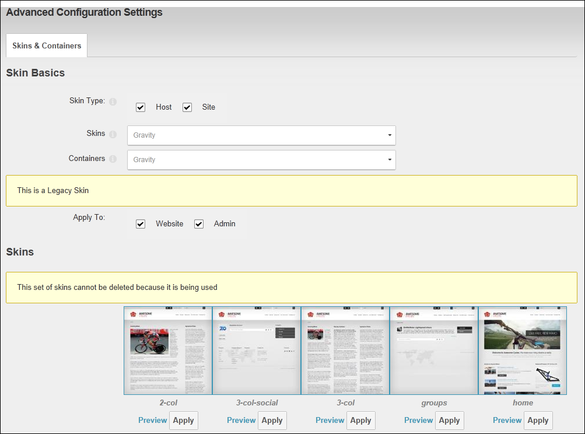
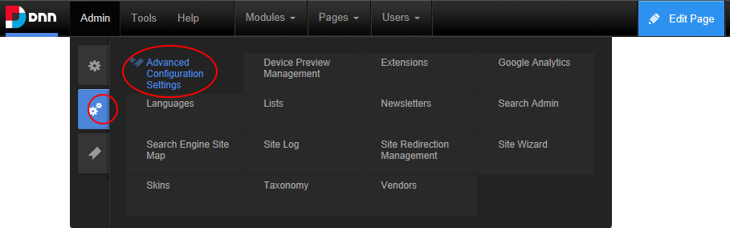
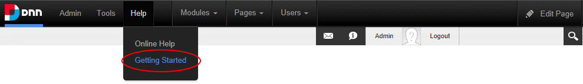
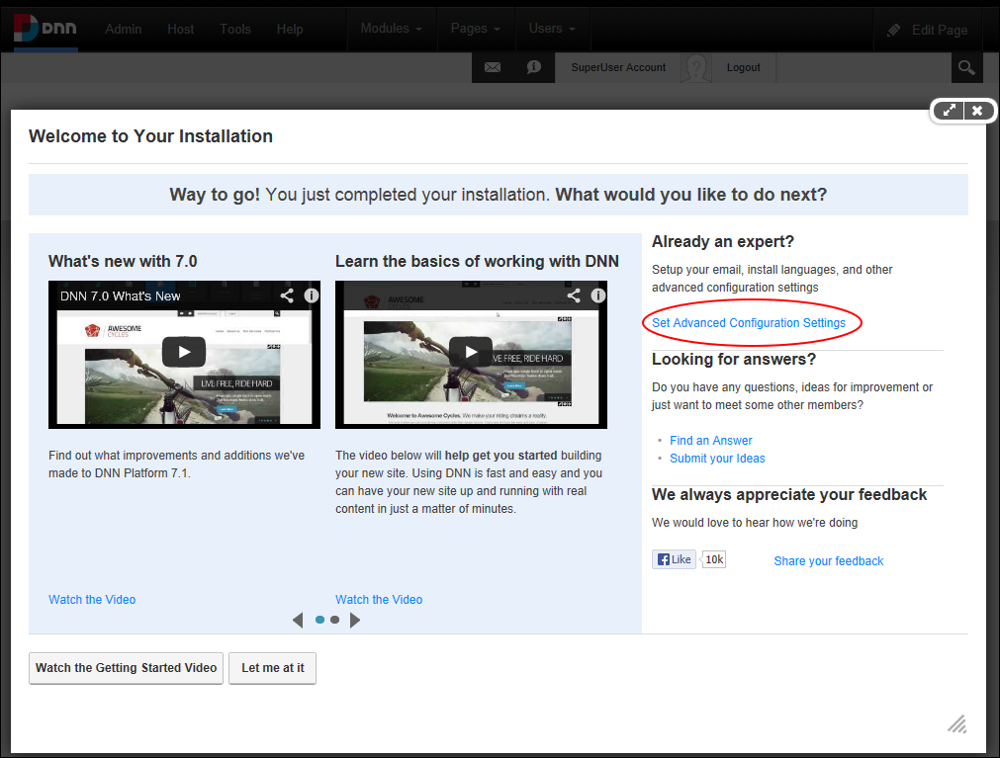

Advanced Configurations Settings page for SuperUsers
The Advanced Configuration Settings section groups together a range of tools to provide SuperUsers and Administrators with a single location where they viewing and changing the Skins and Containers applied to the current site, setup site email and install language packs, authentication systems, providers and optional modules.
The Advanced Configuration Settings section provides Administrators with an alternative location where they can change the Skins and Containers applied to the current site, setup site email and install language packs, authentication systems, providers and optional modules.
Advanced Configurations Settings page for SuperUsers
Administrators can also use this page, however their access is limited to viewing and changing the Skins and Containers applied to their site.

Advanced Configurations Settings page for Administrators
The Advanced Configuration Settings section is accessed from the ControlBar by selecting Admin > Advanced Settings > Advanced Configuration Settings or from the Admin Console page.

On new DNN installations (not upgraded sites) it can also be accessed from the Getting Started page that is displayed when you first install DNN or from the ControlBar by selecting Help > Getting Started. For upgraded sites, if a page named “Getting Started” does not exist, the link is hidden. If a page already existing is called “Getting Started” the link will lead to that page.

